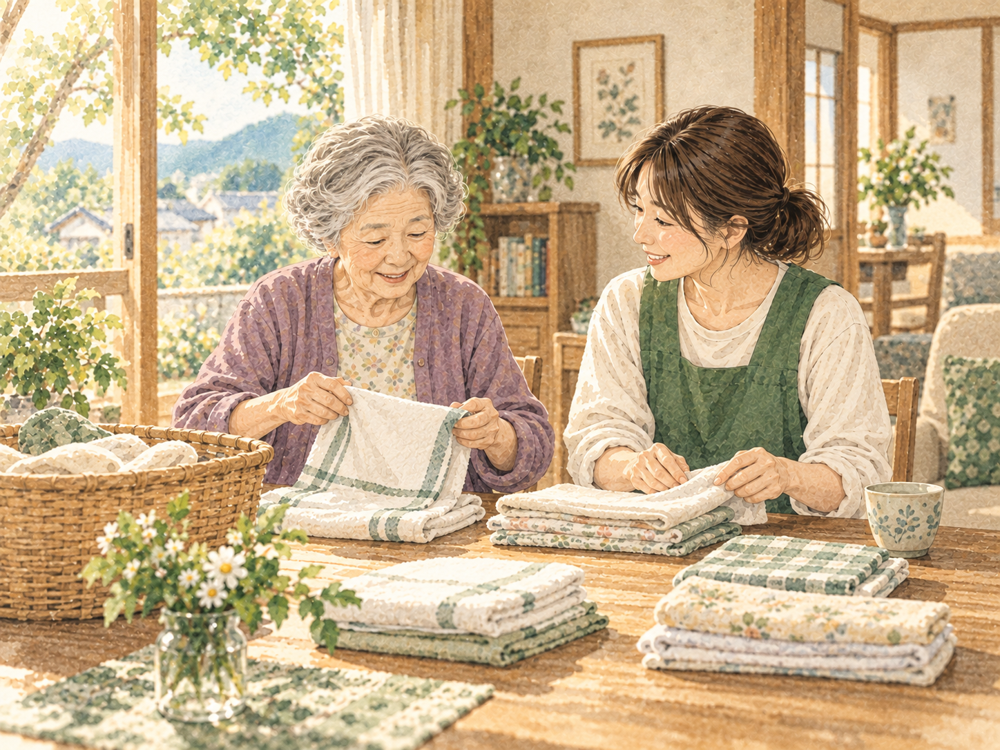

ご自宅へお迎え
ご自宅までお迎えに伺い、和乃家へ。表情や体調を確認しながら、ゆっくり一日を始めます。

A DAY AT WANOIE
一人ひとりの体調や気持ちに合わせながら、いつもの暮らしにつながる時間を過ごします。
YOUR OWN PACE
予定に人を合わせるのではなく、人に合わせて過ごし方を考えます。
おしゃべりを楽しみたい日も、静かに過ごしたい日もあります。和乃家では、入浴や食事、活動をその日のご様子に合わせ、ご本人ができることを一緒に行います。
以下は過ごし方の一例です。時刻や内容は、体調やご希望などによって異なります。
ご自宅までお迎えに伺い、和乃家へ。表情や体調を確認しながら、ゆっくり一日を始めます。
お茶を飲んだり、お話をしたり。趣味活動、軽い運動、入浴など、その方に合わせて過ごします。

できる方には調理や配膳にも参加していただきます。皆で食卓を囲み、あたたかな食事を味わいます。

レクリエーション、散歩、外出、季節行事など。天候や体調を見ながら楽しみます。

ひと息ついてから、ご自宅までお送りします。その日のご様子を、ご家族へ丁寧にお伝えします。

EVERYDAY MOMENTS
食事をつくる、洗濯物をたたむ、近所を歩く。ご本人がこれまでしてきたこと、得意なことを大切にします。何気ない営みが、役割や自信につながると考えています。

NEXT STEP
認知症のある方のご利用について、お気軽にお問い合わせください。
電話 0855-25-5343ご利用・ご相談 →